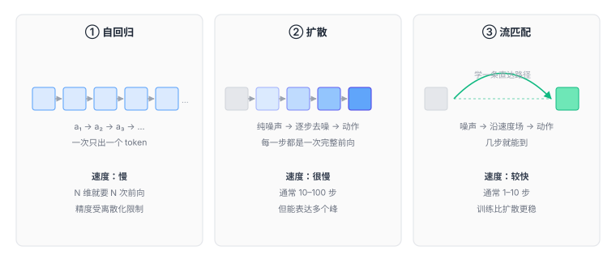

3.3 动作解码：三种把想法变成数字的流派¶
到这里，模型已经有了一份「理解当前局面」的特征向量。剩下最后一公里：
怎么把它变成 10 个具体的数字？
这一节是各个 VLA 差异最大的地方。看论文时，只要认出它用哪种动作头，基本就能判断它的速度、精度和适用场景。

先排除一个显而易见的答案¶
最直接的做法：接一个全连接层，直接回归出 10 个数。
损失函数用均方误差：
简单、快、一次前向就出结果。为什么不用？
两个原因。
原因一：多峰问题¶
1.3 节讲过：同一个场景有多种合理动作。MSE 会输出它们的平均，而平均值往往是个无效动作。
这个问题在高维空间更严重。10 维动作里，即使每一维都只有两个合理值，组合起来就有 \(2^{10} = 1024\) 种合理动作。它们的「平均」几乎必然落在物理上不可行的区域。
原因二：误差分布不是高斯的¶
MSE 隐含假设「预测误差服从正态分布」。但机器人的动作误差不是这样——它经常是有偏的：模型倾向于「保守」（动作幅度偏小），因为小幅动作的损失更小。
结果就是：训练损失很低，实际执行时机器人动作畏畏缩缩，永远差一点到位。
这两个问题，就是所有动作头设计的出发点。
流派一：自回归离散 token¶
怎么做¶
把连续的每个动作维度，切成 256 档。
于是 10 维动作变成了 10 个 token。模型像生成句子一样，一个一个吐出来。
为什么这么设计¶
因为这样可以完全复用语言模型的训练框架。
不需要改损失函数，不需要设计新架构，就是标准的「下一个 token 预测」。RT-2 正是靠这个思路，把一个视觉语言模型直接变成了 VLA——几乎没有架构改动。
而且它天然能表达多峰。 因为输出的不是确定值，是一个 256 类的概率分布，两个峰都能表示。
代价¶
代价一：精度损失。
256 档听起来不少，但如果动作范围是 ±5 厘米，一档就是 0.4 毫米。
对粗放操作够用，对精密装配（需要 0.05 毫米）就完全不够。
想提高精度只能加档位，但档位一多，词表变大，模型变难训。
代价二：串行生成，慢。
10 个 token 要生成 10 次，每次都是一次完整的前向传播。
一个 7B 模型单次前向约 50 毫秒，10 次就是半秒。这意味着一秒只能出两个动作。
代价三：误差传播。
第 3 个 token 是在「前两个 token 已经确定」的条件下生成的。如果第 2 个错了，第 3 个大概率跟着错。
这就是自回归模型的老毛病——前面错一点，后面全歪，和写文章时写错一个词导致整句跑偏是一个道理。
代表模型
RT-2（2023）：最早把动作当 token 的 VLA，用 PaLI-X / PaLI-3 做主干。
OpenVLA（2024）：7B 参数，Llama 2 + DINOv2 + SigLIP，动作离散成 256 档，输出 7 个 token。 完全开源，是目前最常被拿来当 baseline 的模型。
流派二：扩散¶
怎么做¶
思路完全不同：不预测动作，预测「怎么把噪声变成动作」。
训练时：
- 拿一个真实动作 \(a\)；
- 加随机噪声，得到 \(a_t\)（\(t\) 越大越乱）；
- 让网络看「加噪后的 \(a_t\)」和「当前观测」，去预测「加了什么噪声」；
- 学会了之后，测试时从纯噪声出发，一步步减掉预测的噪声。
为什么有效¶
因为它不是在拟合「平均动作」，而是在学「动作分布的形状」。
模型学会的是：在这个场景下，哪些动作是合理的，哪些不是。即使有两个峰，它也能都学到。
采样时从纯噪声出发，去噪过程会自动「落进」其中一个峰，而不是落在两峰之间。
代价¶
慢。 通常需要 10 到 100 步去噪，每步都是一次网络前向。
一个 100 步的扩散策略，单次决策要几百毫秒，只能跑到 2–5 Hz。
这就是为什么纯扩散的 VLA 很少直接上真机——频率太低，动作会一顿一顿。
代表模型
Diffusion Policy（2023）是把这个思路带进机器人领域的标志性工作。 它不是 VLA（输入里没有语言），但几乎所有后续的扩散式 VLA 都建立在它之上。
流派三：流匹配¶
怎么做¶
这是扩散的改进版，也是目前最先进的一批模型用的方法。
核心区别在于路径的形状。
扩散：从噪声到动作，走的是一条弯曲的、随机的路径。因为每一步加噪/去噪都是随机的，路径没法预知。
流匹配：直接学一个速度场——「在空间里的每一个点，应该往哪个方向、以多快的速度移动」。
从噪声出发，沿着这个速度场走，就能到达动作。
因为速度场是确定性的，可以把它设计得尽量直——从噪声直接指向动作，不用绕路。
类比
从北京到上海。
扩散：像一个人喝多了在路上晃，走了一百步才到，每步都要重新判断方向。
流匹配：像高速公路，一路直着开，十步就到。
两者终点一样，但路径效率差一个数量级。
为什么更快¶
两个原因：
- 路径更直，所以需要的积分步数少（10 步甚至 1 步就够）；
- 训练目标更简单——直接回归「速度向量」，是标准的监督学习，比扩散的「预测噪声」更稳定。
代价¶
仍然是多步。1 步的版本（叫「一步流」或 consistency model 那类思路）质量会掉一些，实践中常用 5–10 步。
三种流派横向对比¶
| 自回归 | 扩散 | 流匹配 | |
|---|---|---|---|
| 输出什么 | 256 类概率分布 | 噪声 → 动作的映射 | 速度场 |
| 一次决策要几步 | 10 步（每维一步） | 10–100 步 | 1–10 步 |
| 精度 | 受限于离散档位 | 连续，高 | 连续，高 |
| 多峰表达 | 能（靠分类分布） | 能（天然） | 能（天然） |
| 训练难度 | 低（复用 LLM） | 中 | 中 |
| 误差累积 | 严重（串行） | 轻（整段一起生成） | 轻 |
| 代表 | RT-2、OpenVLA | Diffusion Policy | π₀ |
怎么记：
- 自回归 = 把动作说成一串词，借用语言模型；
- 扩散 = 从噪声里雕出动作，一百刀；
- 流匹配 = 从噪声直奔动作，十刀。
一个被低估的共同问题：动作是「一段」，不是「一个」¶
注意上面三种方法，输出的其实都不是单个动作，而是一个动作序列。
- 自回归：一次生成 k 个 token 组（每组的维度数 × k）
- 扩散：一次去噪出一整个 chunk（比如 16 步 × 10 维）
- 流匹配：同样，一次输出一个 chunk
这不是巧合，是必须的。
原因在2.3 节讲过：底层控制要 100 Hz，而模型推理只能到几 Hz。中间的空档必须用「提前预测好的未来动作」填满。
所以严格说，\(\pi(a \mid o, l)\) 里的 \(a\) 通常是一个动作块：
\(H\) 叫预测视野（horizon）。常见取值：
| 模型 | H | 控制频率 | 一次推理覆盖 |
|---|---|---|---|
| ACT | 100 | 50 Hz | 2 秒 |
| Diffusion Policy | 16 | 10 Hz | 1.6 秒 |
| π₀ | 50 | 50 Hz | 1 秒 |
H 的选择是个权衡：
- H 太小：推理频率要很高，来不及；
- H 太大：动作要提前一秒多规划好，中途出意外反应不过来，而且预测远期动作本来就难。
这个权衡在5.2 节讲 π₀ 时会再出现一次。
还有第四种：不生成，直接回归但加个「多峰」的壳¶
除了上面三条主流路线，还有一类做法值得一提：
混合密度网络（MDN）：让网络输出 K 个高斯分布的参数（每个分布的均值、方差、权重），而不是一个值。
这样也能表达多峰——K 个峰。采样时先按权重选一个峰，再从那个峰里采样。
优点是快（一次前向），缺点是 K 要人工设定，而且高维下（10 维）每个高斯都要一个完整的协方差矩阵，参数量爆炸。
实践中常见的折中是：假设各维独立，每个维度单独用 K 个高斯混合。这样参数可控，但丢掉了维度之间的相关性——而机器人的动作维度恰恰是强相关的（手腕转多少，跟手臂位置有关系）。
所以这条路现在用得不多，但它说明了一件事：「表达多峰」才是核心需求，「用扩散」只是手段之一。
本章小结¶
动作解码这一层的演化，有一条清晰的主线：
每一步都是为了解决上一步暴露的问题，而不是为了追新。
这也是读 VLA 论文的正确姿势：不要记「谁提出了什么」，要记「它想解决前面哪个方法的哪个毛病」。
自测三问
- 为什么不能用一个全连接层直接回归动作？说出两个原因。
- 自回归和扩散都能表达多峰，它们的机制有什么不同？各自的误差是怎么累积的？
- 流匹配为什么比扩散快？「路径更直」具体指什么？
动作解码三条路：自回归把动作说成词（复用 LLM，但慢且粗）、扩散从噪声雕出动作（准但很慢）、 流匹配沿直线走过去（准且快）。真正的需求只有一个——能表达多峰的动作分布。